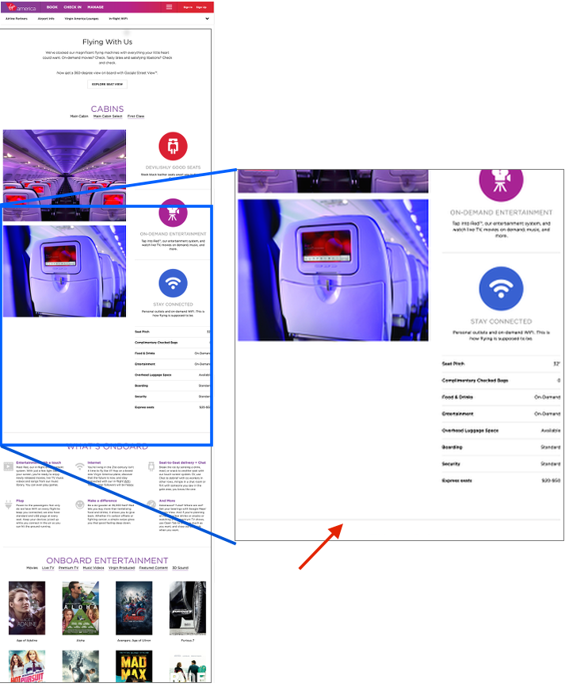

The Illusion of Completeness: What It Is and How to Avoid It
Summary: Users can think they see the entire web page, although additional content exists off-screen. Designers must help users discover all relevant information.
By Kim Salazar on January 17, 2016Looking at a web page is much like looking at a landscape through a set of binoculars. A small part of that landscape is in your immediate view, but often you have to pan up and down, or side to side to see it all. Similarly, on a web page, to discover all the available content, users may need to scroll up and down, or even swipe or scroll side to side.
When viewing a landscape through binoculars, we know there are vast expanses of scenery in each direction — and that we may need to move our binoculars to spot the elusive bald eagle. But on the web, users have to rely on the design of the page to understand what possibilities for exploration exist. A golden nugget may be hidden below the fold design of the page to understand what possibilities for exploration exist. A golden nugget may be hidden, and users will never see it, unless they know (and feel motivated) to scroll. It is up to web designers to create designs that guide people toward valuable information by clearly signaling content down the page or even to the side.
Definition: Illusion of Completeness
The illusion of completeness happens when the visible content on the screen appears to be complete, when in fact more information exists outside of the viewable area. The term was coined by Bruce Tognazzini in 1998. The illusion occurs when the visual design fails to guide users toward additional content that is present off-screen. Thinking a page is complete — when it isn’t — is a serious usability failure: it can make users miss valuable information and prevent them from attaining their goals.
Since we’ve been warning designers of this usability problem for 18 years, why write about it again now? Because sites keep making the same mistake and because we keep seeing users trapped by the illusion of completeness in much of our ongoing user research. Let’s put a last nail in this coffin and finally eradicate the illusion of completeness from the web so that we don’t have to come back and tell you about it again in 2034.
Illusion of Completeness on the Vertical Dimension
In the early days of the web, users were less likely to scroll below the fold. Since then, users have grown accustomed to scrolling vertically. However, just because users have learned to scroll, we cannot expect them to know to scroll even in the absence of visual indicators inviting them to do so. If you don’t think there’s any more info, why on earth would you scroll?
Here is a list of design styles that often communicate the end of relevant content and create an illusion of completeness:
-
Large hero graphics or videos. The recent trend toward image-based design has driven many websites to incorporate large eye-catching imagery or videos in the top area of the page. These approaches often push important content below the fold, out of immediate view and offer no additional cues to invite users to scroll.
In the example above, the large video coupled with a strong call to action make the page appear complete, when in fact all details about this company are outlined further down the screen. This design creates a false floor, or an apparent end to the webpage. The absence of any navigational elements further contributes to the effect.
In a usability study we asked users to visit this site and find out what service this company offered. Six out of eight users did not realize they could scroll down this page. Because no other links or calls to action were visible, all our users selected the Get Started button and were met with a series of modals asking for personal information only to discover later on that the service was not available in their area. 75% of the test users were frustrated and not only had to spend time and effort entering their details on the site, but also were unable to find out what exactly this company did. -
Distinct horizontal lines. The illusion of completeness can occur anywhere on the page, not just at the top (as in the example above). A break in content marked by a horizontal line that spans the width of the page can create a visual barrier and discourage people to scroll further. If users encounter these strong horizontal breaks within the page content, they can assume it’s not just the end of a section, but also the end of the page.
 -
Expansive white space between content elements. When horizontal gutters are too large or the content does not completely fill the container that it lives in, the large gap between content elements can signal the end of a page when users scroll down only to encounter one of those wide gaps. Why continue scrolling if it seems you won’t get to see more information?
-
Interruptions in the content flow. Ads, internal promotions, or social-share buttons can indicate to users that they have reached the end of the page's relevant content. The issue is intensified if the ad is large enough that it becomes difficult to see what’s below it —especially a danger on mobile devices with small screen sizes. Additionally, when the ad is placed at a natural end point in the content flow (e.g., at the end of an article), users can be justified in assuming there is no more interesting information below (although, for instance, the page may still contain article comments or related content below the ad).
The Illusion of Completeness on the Horizontal Dimension
Although users are accustomed to scrolling vertically on the web, scrolling (or swiping) horizontally is still not an expected way to interact with a desktop page. Even on mobile devices, where the horizontal-swipe gesture is fairly common, interfaces that rely on these gestures need strong signifiers to indicate the direction of interaction to users.
On desktops, horizontal navigation is most frequently associated to carousels. Cues that communicate how to interact with the carousel and expose the rest of the carousel frames are crucial.
It is less common that an entire website be laid out horizontally, requiring users to use a horizontal scroll bar to view all of the content. Occasionally designers and creative businesses take this direction on their sites to showcase their creative design abilities. For mainstream sites, relying on horizontal scrolling is discouraged. The horizontal scrollbar is cumbersome because it requires constant attention and physical effort to steer the cursor within a narrow tunnel. And sites that are based on horizontal scrolling can easily make the same visual-design mistakes that create illusion of completeness on the vertical dimension.
Ensure Your Pages Communicate Continuation Versus Completeness
-
Avoid full-screen hero content. When using large banners, carousels, or videos in the hero space, ensure that additional content peeks above the fold to lead users to scroll further.
-
Be cognizant of contrasting lines or vast white spaces between content. These visuals can be misconstrued as the end of relevant content.
-
Be cautious of interrupting content. If you must interrupt content with an ad or with social-share icons, communicate to users that additional information can be found further down the page.
-
Create obvious cues for horizontal swiping. Crucial information does not belong in a carousel or in any other horizontally scrolling container. Users often miss even obvious navigational cues, plus, the information scent provided by these cues is too weak and people are unsure what to expect from the additional content. When you do use a carousel, find ways to clearly communicate that additional information exists:
- Show additional content bleeding off screen.
- Include a list of headlines to indicate the content of the different carousel frames.
- Provide salient and obvious arrow controls and slide counts.
-
Test on many devices to ensure that design elements are working across different viewport sizes.